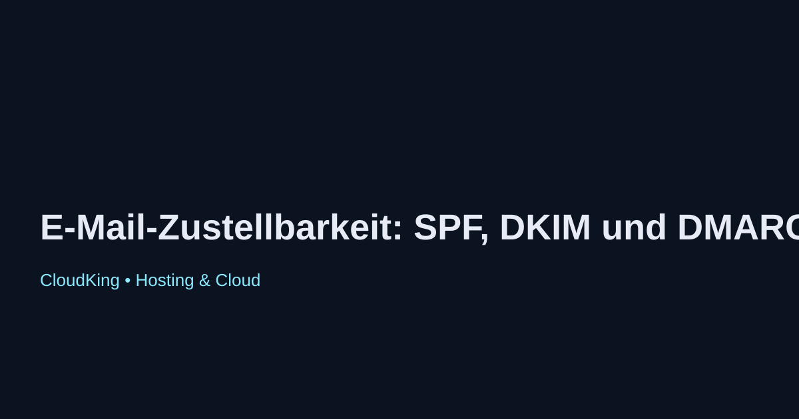

E-Mail-Zustellbarkeit: SPF, DKIM und DMARC im Überblick
Die E-Mail-Zustellbarkeit ist ein entscheidender Faktor für den Erfolg von E-Mail-Marketing und geschäftlicher Kommunikation. Um sicherzustellen, dass E-Mails im Posteingang des Empfängers landen und nicht im Spam-Ordner, sind SPF, DKIM und DMARC wichtige Technologien zur E-Mail-Authentifizierung.
Was ist SPF?
Sender Policy Framework (SPF) ist ein Mechanismus, der es Domaininhabern ermöglicht, festzulegen, welche Server berechtigt sind, E-Mails im Namen ihrer Domain zu versenden. Durch die Veröffentlichung eines SPF-Eintrags im DNS können empfangende Mailserver überprüfen, ob die E-Mail von einem autorisierten Server stammt.
Was ist DKIM?
DomainKeys Identified Mail (DKIM) ist eine Methode zur E-Mail-Authentifizierung, die es Absendern ermöglicht, eine digitale Signatur zu einer E-Mail hinzuzufügen. Diese Signatur wird vom empfangenden Mailserver überprüft, um sicherzustellen, dass die E-Mail während der Übertragung nicht verändert wurde und tatsächlich vom angegebenen Absender stammt.
Was ist DMARC?
Domain-based Message Authentication, Reporting & Conformance (DMARC) baut auf SPF und DKIM auf und bietet Domaininhabern die Möglichkeit, Richtlinien festzulegen, wie empfangende Mailserver mit nicht authentifizierten E-Mails umgehen sollen. DMARC hilft, Phishing-Angriffe zu reduzieren und die Absenderreputation zu verbessern.
Fazit
Die Implementierung von SPF, DKIM und DMARC ist unerlässlich, um die E-Mail-Zustellbarkeit zu optimieren und die Sicherheit der E-Mail-Kommunikation zu erhöhen. Unternehmen sollten diese Technologien nutzen, um ihre E-Mail-Kampagnen effektiver zu gestalten und das Vertrauen ihrer Empfänger zu gewinnen.